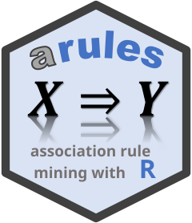
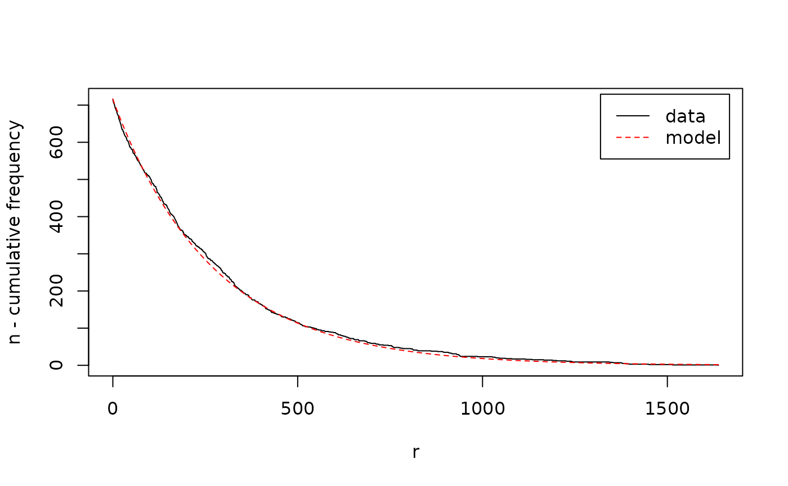
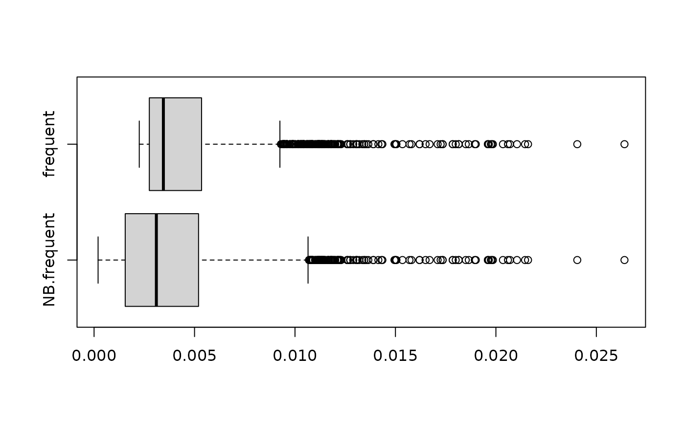

Getting started with arulesNBMiner
Source:vignettes/arulesNBMiner.Rmd
arulesNBMiner.RmdAssociation rule mining using the support-confidence framework is plagued by the issue that it produces a large amount of spurious frequent itemsets and rules while still ignoring patterns that are below the set minimum support threshold.
This issue is addressed by arulesNBMiner, which extends
the arules package with the NBMiner algorithm to mine
NB-frequent itemsets and NB-precise association rules. The algorithm
uses a model-based frequency constraint as an alternative to a single,
user-specified minimum support. The constraint utilizes knowledge of the
process generating transaction data by applying a simple stochastic
mixture model (the NB model) which allows for transaction data’s
typically highly skewed item frequency distribution.
A user-specified precision threshold is used together with the model to find local frequency thresholds for groups of itemsets. Based on the constraint we develop the notion of NB-frequent itemsets and adapt a mining algorithm to find all NB-frequent itemsets in a database. Experiments in Hahsler (2006) show that the new constraint provides improvements over a single minimum support threshold and that the precision threshold is more robust and easier to set and interpret by the user.
This vignette demonstrates the workflow with the package’s bundled Agrawal transactions This dataset is artificially created from a known set of patterns, which we will use to evaluate how well the algorithm is able to recover them.
Load the data
Load the package and its example data. Agrawal.db is a
transactions object, the input format used by
NBMiner().
library(arulesNBMiner)
#> Loading required package: arules
#> Loading required package: Matrix
#>
#> Attaching package: 'arules'
#> The following objects are masked from 'package:base':
#>
#> abbreviate, write
#> Loading required package: rJava
data("Agrawal")
Agrawal.db
#> transactions in sparse format with
#> 20000 transactions (rows) and
#> 1000 items (columns)The dataset was created using 2000 patterns (itemsets) as described
in Agrawal.db. Patterns are mixed and corrupted to create
the transactions.
Agrawal.pat
#> set of 2000 itemsetsFit the baseline model
NBMiner uses a stochastic baseline model for independent items. Each item’s frequency is modeled as a Poisson count with an item specific rate. The variation in those rates over items is modeled by a Gamma distribution. Mixing the Poisson counts over the Gamma rates gives a negative binomial distribution. This flexible baseline captures the skewed frequency distributions common in transaction data: a few items occur often, while many occur rarely.
NBMinerParameters() estimates this global model from the
item frequencies. Items that never occur are absent from the
transactions, so the estimator uses an expectation-maximization
procedure to estimate the unobserved zero frequency class. The
trim argument can exclude the most frequent items when they
are outliers that would distort the fit. Inspect the diagnostic plot
before choosing a nonzero trim value. A suitable trim percentage can be
found by visual comparison of the empirical data and the estimated model
or by minimizing the \(\chi^2\)-value
of the goodness-of-fit test reported during the fit procedure.
param <- NBMinerParameters(Agrawal.db, trim = 0)
#> using Expectation Maximization for missing zero class
#> iteration = 1 , zero class = 3 , k = 0.9862909 , m = 277.9777
#> iteration = 2 , zero class = 3 , k = 0.9862909 , m = 277.9777
#> total items = 719
#>
#> Goodness of fit/chi-square test on binned count data
#> H0: Observed counts match the expected proportions.
#> Bins: 10
#> X-squared = 5.778414 with 9 degrees of freedom
#> p.value = 0.7618744
param
#> pi theta n k a minlen maxlen rules
#> 0.99 0.5 719 0.9862909 0.001371754 1 5 FALSEThe diagnostic plot compares the observed data with the model. The plot shows the number of items with a frequency larger than . The fitted distribution is characterized by the two parameters of the negative-binomial distribution, the scaling parameter \(a\) and the shape parameter \(k\).
Mine NB-frequent itemsets
The NB distribution provides for an itemset \(l\) a baseline for the support distribution of the candidate 1-extension itemsets \(l \cup \{c\}\) under independence. If in the database some item candidates \(c\) are related to the items in \(l\), then \(l \cup \{c\}\) will have a higher frequency in the data than expected by the baseline model. Finding non-random 1-extensions of \(l\) (extensions with item candidates with a too high co-occurrence frequency), is the same as identifying a frequency threshold \(\sigma_l\), where accepting item candidates with a frequency count \(r \ge \sigma_l\) separates associated items best from items which co-occur often by pure chance. We use a threshold on precision \(\pi\), the proportion of correctly predicted positive cases in all predicted positive cases to determine \(\sigma_l\) and accept all 1-extensions \(l \cup \{c\}\) if
\[supp(l \cup \{c\}) ≥ \sigma_l\].
This means that the single user-specified precision threshold \(\pi\) leads to different support thresholds \(\sigma_l\), one for all 1-extensions of itemset \(l\).
The pi parameter sets the minimum predicted precision
for accepting 1-extensions.
The theta parameter controls pruning during search. For
a larger itemset, it sets the required fraction of its immediate subsets
that must support the itemset as an NB-frequent pattern. A value of 1 is
most restrictive requiring all subsets also to be NB-frequent; 0 relaxes
this condition. The intermediate default value 0.5 balances pruning with
the chance of retaining associations whose items have different
frequencies.
itemsets_NB <- NBMiner(Agrawal.db,
pi = 0.99,
parameter = param,
minlen = 2L)
itemsets_NB
#> set of 2603 itemsets
inspect(head(itemsets_NB, by = "precision"))
#> items precision
#> [1] {item220, item956, item964} 1
#> [2] {item510, item667, item885} 1
#> [3] {item452, item956, item964} 1
#> [4] {item60, item173, item417, item440, item831} 1
#> [5] {item258, item452, item956} 1
#> [6] {item149, item231, item611} 1NB-frequent vs. frequent itemsets?
How many found itemsets are non-spurious, meaning that they are consistent with the known patterns used to generate the data? This can be answered by looking of how many found patterns contain only items which are subsets of the items in the patterns.
num_correct <- function(itemsets, patterns)
table(factor(rowSums(is.subset(itemsets, patterns)) > 0,
c(FALSE, TRUE)))
num_correct(itemsets_NB, Agrawal.pat)
#>
#> FALSE TRUE
#> 0 2603Now compare this with the non-spurious patterns found by regular frequent itemset mining. We use here the Apriori algorithm and select the same number of itemsets with the highest support.
itemsets_supp <- apriori(Agrawal.db,
support = 0.001,
target = "frequent",
minlen = 2,
control = list(verbose = FALSE))
itemsets_supp <- head(sort(itemsets_supp, by = "support"), length(itemsets_NB))
itemsets_supp
#> set of 2603 itemsets
num_correct(itemsets_supp, Agrawal.pat)
#>
#> FALSE TRUE
#> 692 1911NB-frequent itemsets are much better at finding non-spurious itemsets. Since NBMiner sets individual support thresholds for itemsets, it is also able to accept less frequent itemsets which are removed by the strict minimum support used for regular frequent itemsets.
support_dist <- data.frame("NB-frequent" = support(itemsets_NB, transactions = Agrawal.db),
"frequent" = support(itemsets_supp, transactions = Agrawal.db))
boxplot(support_dist, horizontal = TRUE)
NB-frequent itemsets are useful when it is important to find itemsets with low support and when suppressing spurious itemsets is important.
Mine NB-precise rules
Hahsler (2006) shows an important connection between 1-extensions and association rules:
\[supp(l \cup \{c\}) \ge \sigma_l \iff conf(l \rightarrow c) \ge \gamma_l\] This means choosing \(\sigma_l\) on 1-extensions is equivalent to choosing a confidence threshold \(\gamma_l\) for all rules starting with \(l\). We call these rules NB-precise rules since the individual confidence thresholds are chosen using a user-specified precision threshold \(\pi\).
NB-precise rules are rules created by NBMiner with the parameter
rules = TRUE.
For comparison, we add the standard measures support, confidence, and lift.
rules <- NBMiner(Agrawal.db,
parameter = param,
pi = 0.99,
rules = TRUE)
rules
#> set of 5617 rules
quality(rules) <- cbind(quality(rules),
interestMeasure(rules,
c("support", "confidence", "lift"),
transactions = Agrawal.db))
inspect(head(sort(rules, by = "precision"), n = 10))
#> lhs rhs precision support confidence lift
#> [1] {item220, item964} => {item956} 1 0.01100 0.9649123 75.67939
#> [2] {item220, item452} => {item956} 1 0.01155 0.9625000 75.49020
#> [3] {item510, item885} => {item667} 1 0.01180 0.8773234 26.82946
#> [4] {item452, item964} => {item956} 1 0.01115 0.9695652 76.04433
#> [5] {item889} => {item860} 1 0.00990 0.8839286 37.21805
#> [6] {item848} => {item152} 1 0.00775 0.6126482 10.50855
#> [7] {item167, item552} => {item959} 1 0.01215 0.9310345 24.59800
#> [8] {item987} => {item320} 1 0.00960 0.8170213 17.83889
#> [9] {item529, item627} => {item940} 1 0.01075 0.9071730 26.10570
#> [10] {item707} => {item394} 1 0.00865 0.8046512 19.48308Rules found with a precision close to 1 are very unlikely to be spurious. Bu comparing the rules to standard association rule interest measures, we see that these some rules have significantly smaller support but all have very large lift values.
References
Hahsler, M. (2006). A model-based frequency constraint for mining associations from transaction data. Data Mining and Knowledge Discovery, 13(2), 137–166. Full text on arXiv.